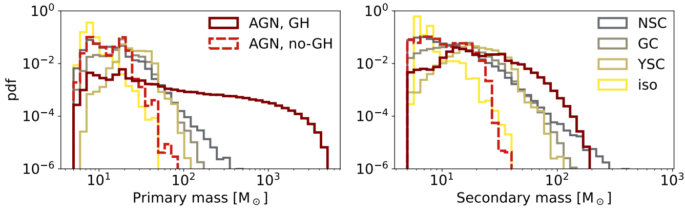

Binary black holes merging from active galactic nuclei
This project investigates how black holes embedded in AGN disks can grow through repeated mergers, and how gas interactions — particularly gas hardening — can shape their properties. The study contrasts two models: one with gas hardening (GH), where the gas facilitates orbital decay of binaries, and one without it (no-GH), where mergers proceed solely due to gravitational wave (GW) emission.
Scientific Context: Black Hole Growth in AGN Disks
Supermassive black holes (SMBHs) at galactic centers are often surrounded by dense gaseous disks. These active galactic nuclei (AGN) can host populations of stellar-origin black holes that sink toward special regions known as migration traps. Within these traps, black holes can interact and merge, sometimes repeatedly, leading to hierarchical mergers that build up intermediate-mass black holes (IMBHs).
Key scientific goals of this work include:
- Understanding the role of gas torques and orbital damping in black hole mergers.
- Quantifying the impact of gas hardening on the mass and spin distribution of resulting binaries.
- Comparing AGN-driven mergers with other formation channels (e.g., young star clusters, globular clusters, isolated binaries).
Gas Hardening vs. No Gas Hardening: Two Evolutionary Scenarios
Two physical models are considered:
- Gas Hardening (GH): The gas surrounding binaries extracts angular momentum and energy, significantly speeding up the inspiral. This promotes multiple merger generations and efficient spin alignment.
- No Gas Hardening: Mergers rely only on gravitational radiation. Fewer hierarchical events occur, and remnant spins remain isotropically distributed.
Comparing AGN Mergers to Other Astrophysical Channels
To understand whether black hole (BH) mergers occurring in AGN disks are truly distinct, the authors systematically compared their results to four other formation scenarios. This comparison was carried out using BBlack, a statistical tool that allows Bayesian inference of the contribution (or mixing fraction) of each channel based on gravitational-wave data.
What Are the Competing Formation Channels?
Besides the AGN disk scenario, four environments were modeled consistently using the same population synthesis framework (sevn) and astrophysical assumptions:
- Young Star Clusters (YSC): Compact clusters of newly formed stars where dynamical interactions between massive remnants are frequent.
- Globular Clusters (GC): Dense, old stellar systems that can retain black holes and facilitate repeated mergers over time.
- Nuclear Star Clusters (NSC): Stellar systems surrounding supermassive black holes, similar to the centers of galaxies.
- Isolated Binaries: Binary stars evolving without dynamical interactions, where black holes form and merge solely through stellar evolution and gravitational radiation.
These environments differ in density, metallicity, and dynamical conditions, which all influence the mass, spin, and rate of BH mergers.
Mass Distributions and Channel Fingerprints

The AGN disk with gas hardening (GH) stands out sharply from the other channels. In this model, black holes can undergo multiple successive mergers, leading to very high final masses — up to ~5,000 solar masses. This is well beyond the range achievable by the other channels:
- Dynamical channels (YSC, GC, NSC) typically produce primary black holes up to a few hundred solar masses, with one or two mass peaks around 20–50 M☉.
- Isolated binaries are more limited, with primary BHs rarely exceeding ~50 M☉ due to supernova mass loss and pair-instability constraints.
The no-GH AGN model produces a mass spectrum much more similar to NSCs or GCs, where the hierarchical chain is typically truncated after 2–3 mergers.
Quantifying the Contribution of Each Channel
Using BBlack, I analyzed 56 high-purity gravitational wave events from the LVK catalog (GWTC-3) and inferred the relative contribution of each formation channel (called mixing fractions).

The key conclusions are:
- NSC and YSC channels dominate the observed population due to their ability to produce mergers in the 10–40 M☉ range, which is where most current detections lie.
- The isolated binary channel is disfavored because it predicts too few systems with high spin and mass.
- The AGN+GH channel, while unique in producing extremely massive systems, contributes little to the currently detectable sample — simply because those massive mergers emit at frequencies below the sensitivity range of current detectors like LIGO and Virgo.
- The AGN+no-GH scenario overlaps substantially with NSCs and GCs and is thus hard to distinguish observationally.
In other words, gas hardening in AGN disks leaves a unique imprint on the mass distribution of merging black holes, but confirming its role will likely require future detectors sensitive to lower gravitational-wave frequencies (such as the Einstein Telescope or LISA).
Summary
This study highlights the critical role of gas dynamics in the evolution of black holes within AGN disks:
- Gas hardening enhances the number and mass of hierarchical mergers.
- It leads to high spin alignment, producing effective spin distributions peaking near 1.
- The AGN+GH channel stands out for creating extremely massive black holes, offering a potential explanation for some gavitational-wave sources in the mass gap or beyond.
- Next-generation detectors will be essential to test these predictions and differentiate between competing formation channels.